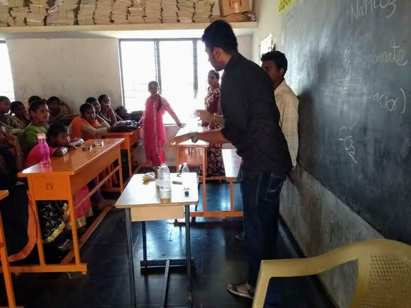
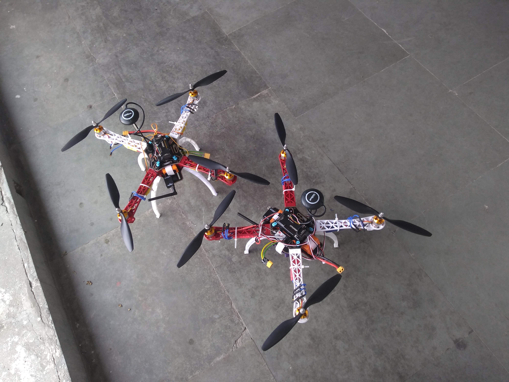
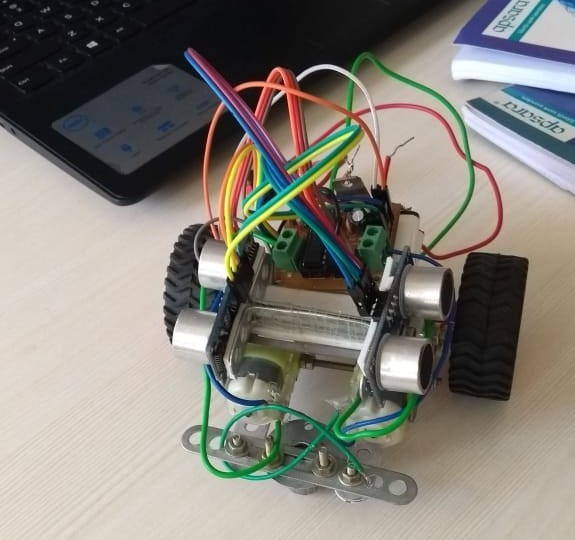
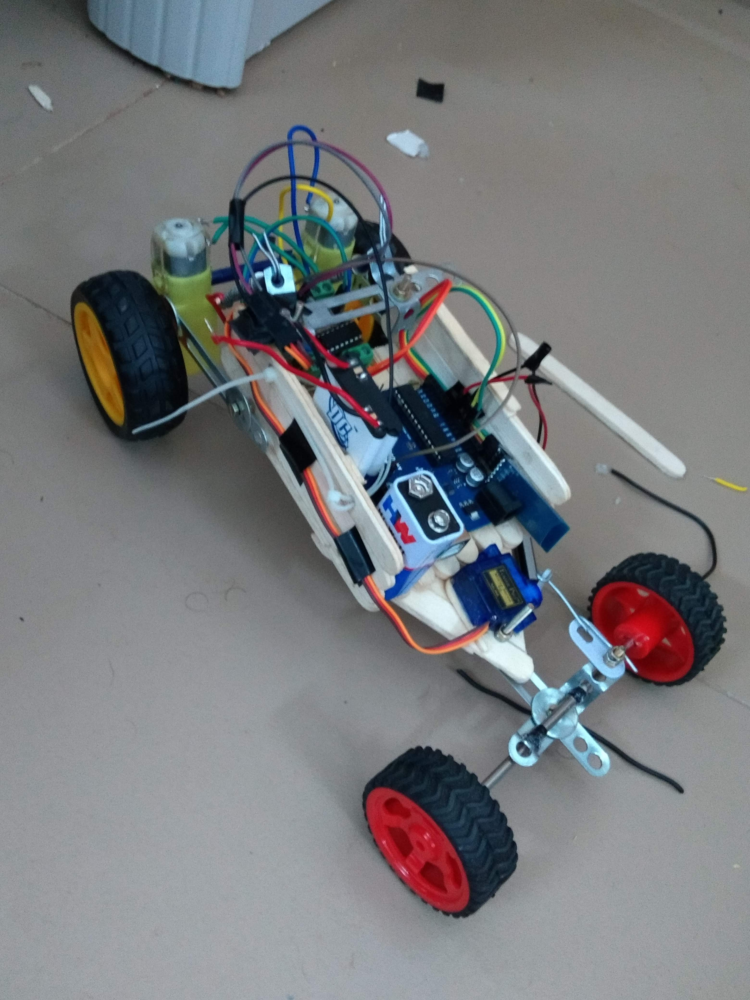
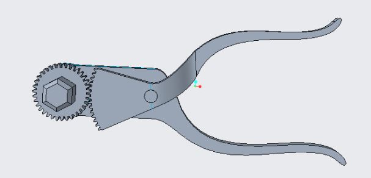

BTech Mechanical Engineering IIT Tirupati (passing out May 2021) , CGPA 9.03/10
Professional Experiences
Technical intern, Tirupati Smart city corporation
Worked on the Public Bike Sharing System that was proposed to be implemented as a part of the
Smart City project in Tirupati.
May 2019 - July 2019
Projects

Mobile Science Laboratory (Guide : Dr. Madan Mohan)
Abstract: Worked on a project in collaboration with students from Purdue University. The aim of the project was to
design a mobile lab kit which can be used by schools located in remote areas
August 2018 - May 2018

Maze Solver and line follower Bot
Abstract: Designed a maze solving bot using ultrasonic and IR sensors and Arduino Uno. This was
made for the National Students Space Challenge 2019 at IIT Kharagpur
October 2019-November 2019

Construction of Autonomous Drone
Developed an autonomous drone for the Inter IIT Tech meet 2019.
The problem statement was to develop an autonomous drone capable of detecting target objects with an onboard camera
module
November 2019-December 2019
Detection of WAAM Defects using Acoustic Signals (Ongoing)
Currently working on applying neural networks to detect defects in Wire Arc Additive Manufacturing Process, using
emitted acoustic signals
July 2020-current

Remote Control Car
Abstract: Designed and made a remote control car using Arduino Uno and Bluetooth module, made for
Road Rash, a technical event in Tirutsava 2019
January 2019

Optimization and Analysis of Anti Torque Wrench (Guide : Dr. N. N. Kishore)
Abstract: : Analyzed the stresses of an anti torque wrench(used in space applications) and came up
with an optimized lightweight and high strength design